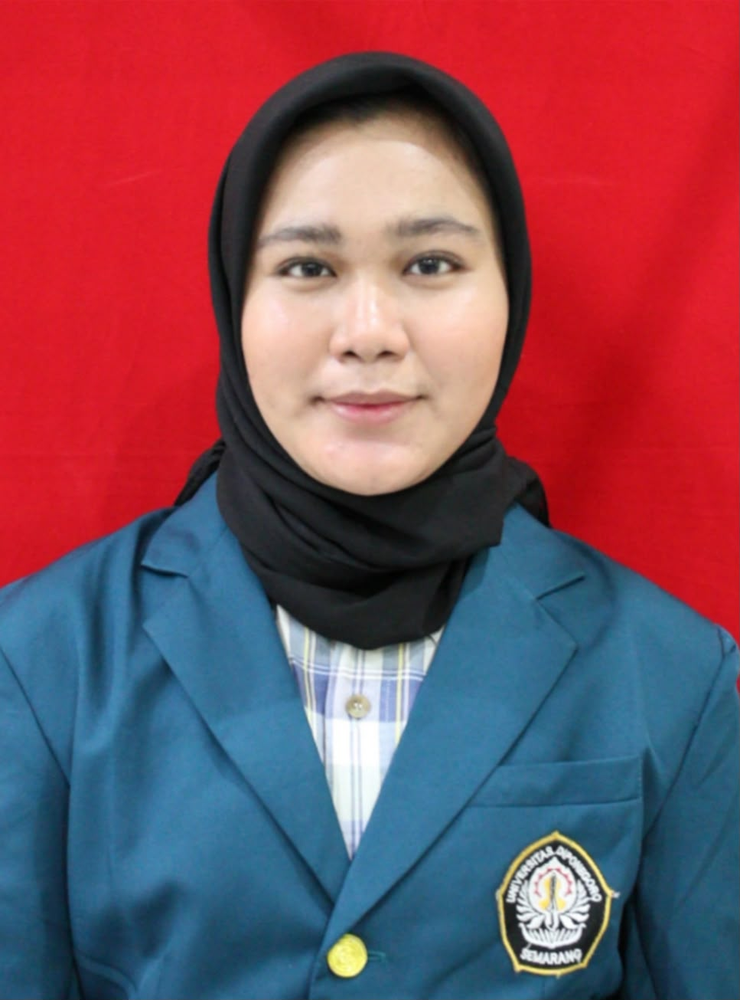

Webgis Gereja Gerakan Pentakosta
Persebaran Gereja Pentakosta DKI Jakarta dan Sekitarnya

Dibuat oleh:
Farhana Fuad | 21110123140147
Teknik Geodesi Universitas Diponegoro
+
−
×
»
Cari Gereja
×
Semua Mawil
Mawil
Cakupan berdasarkan alamat gereja yang terdapat pada data WebGIS.
MENU
×
⌕
Cari Gereja
Cari berdasarkan nama jemaat atau alamat gereja
⌖
Filter Wilayah
Pilih berdasarkan Mawil (1, 2, 3, 4)
☷
Tampilkan Semua Gereja
Tampilkan kembali semua marker gereja
i
Tentang WebGIS
Informasi tentang latar belakang, tujuan, dan pembuat WebGIS.
Detail Gereja
×
Foto gereja belum tersedia
📍 Buka di Google Maps